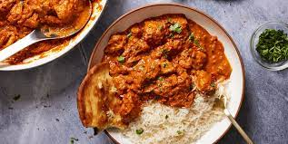
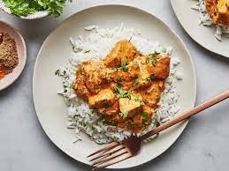
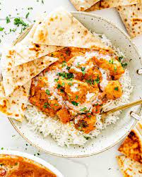
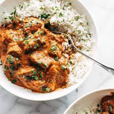

Chicken Tikka Masala

Ingredients
Spices
Remaining Ingredients
Step By Step
- In a bowl, combine chicken with all of the ingredients for the chicken marinade; let marinate for 10 minutes to an hour (or overnight if time allows).
- Heat oil in a large skillet or pot over medium-high heat. When sizzling, add chicken pieces in batches of two or three, making sure not to crowd the pan. Fry until browned for only 3 minutes on each side. Set aside and keep warm. (You will finish cooking the chicken in the sauce.)
- Melt the butter in the same pan. Fry the onions until soft (about 3 minutes) while scraping up any browned bits stuck on the bottom of the pan.
- Add garlic and ginger and sauté for 1 minute until fragrant, then add garam masala, cumin, turmeric and coriander. Fry for about 20 seconds until fragrant, while stirring occasionally.
- Pour in the tomato puree, chili powders and salt. Let simmer for about 10-15 minutes, stirring occasionally until sauce thickens and becomes a deep brown red colour.
- Stir the cream and sugar through the sauce. Add the chicken and its juices back into the pan and cook for an additional 8-10 minutes until chicken is cooked through and the sauce is thick and bubbling. Pour in the water to thin out the sauce, if needed.
- Garnish with cilantro (coriander) and serve with hot garlic butter rice and fresh homemade Naan bread!


